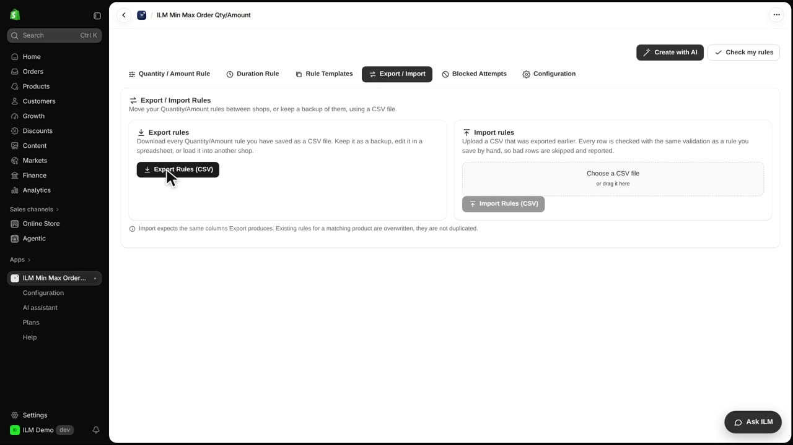
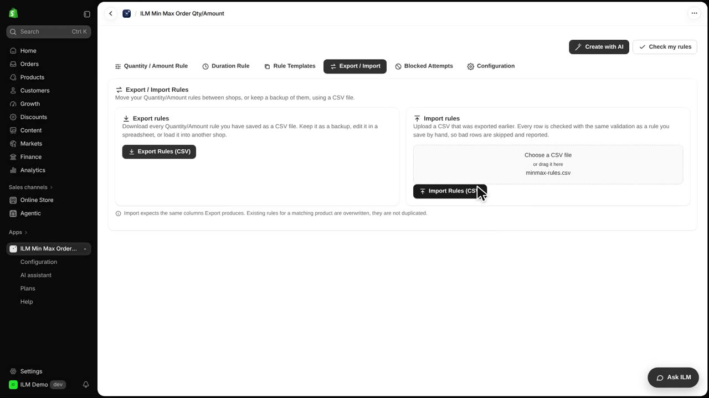
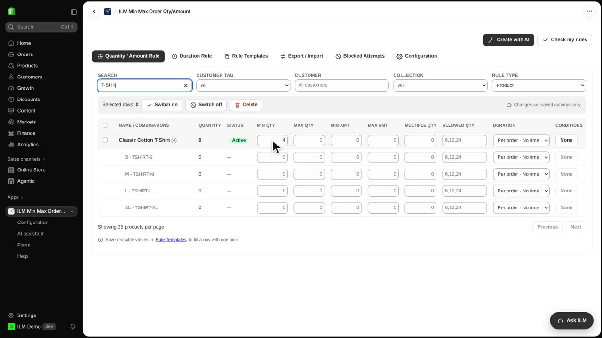

Export and Import let you move all your minimum, maximum and multiple order rules in and out of the app as a single CSV file. It is the fastest way to back up your rules before a big change, to edit dozens of products at once in a spreadsheet, or to copy your setup to another store. Today we will export the rules from the ILM Demo store, change the minimum quantity for the Classic Cotton T-shirt from three to four in the file, and import it back.
Open the Export / Import tab and click Export Rules. The app builds the file and your browser downloads it straight away, with no waiting screen. Keep this file somewhere safe, because it is a full snapshot of every rule in the store.

Here is the downloaded file, minmax-rules.csv, opened in a simple editor. Each rule is one line, with the product handle and its settings, so you can read and change them like a spreadsheet. We find the Classic Cotton T-shirt line and change its minimum quantity from three to four, then save the file.
Under Import rules, click the file picker and choose your edited CSV. Then click Import Rules, and the app checks every line exactly as if you had typed that rule by hand, so a bad value is caught instead of saved. A confirmation message tells you how many rules were created or updated.

Back in the Quantity / Amount Rule tab, we search for the T-shirt and open its Min Qty field. It now shows four, so the existing rule was updated in place rather than duplicated. Shoppers must now add at least four Classic Cotton T-shirts before checkout.
